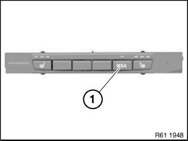
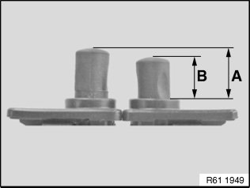

00 .. ... Safety Information For Working on Vehicles With Automatic Engine Start-Stop Function (MSA)
00 .. ... Safety information for working on vehicles with automatic engine start-stop function (MSA)Warning!
If the engine hood/bonnet contact is pulled upwards (workshop mode), the information "switch closed" is output.
The automatic engine start-stop function is active.
An automatic engine start is possible.
Observe safety precautions when working on MSA vehicles.
Before carrying out practical work on the engine, always ensure that the MSA functionality is deactivated so as to prevent automatic engine starting while work is being carried out in the engine compartment.
MSA function is deactivated by:
^ Deactivate MSA by means of button (1) in passenger compartment
^ Open seat belt buckle and driver's door


^ Open engine bonnet/hood and ensure that engine hood/bonnet contact is not in workshop mode
^ Workshop mode
A = 10 mm
^ Basic setting (engine hood/bonnet open)
B = 7 mm
To make sure that the engine hood/bonnet contact is at the basic setting, if necessary press the hood/bonnet contact up to the limit position before starting work and slowly release.
When working with diagnosis tools:
^ Observe instructions in diagnosis tool
Note:
For further information on automatic engine start-stop function (MSA):
^ Refer to the Service Information (bulletin) (for manual transmissions) Service Information (bulletin) 61 01 07 335
^ Refer to the Service Information (bulletin) (for automatic transmissions or twin-clutch gearboxes) Service Information (bulletin) 61 01 10 629